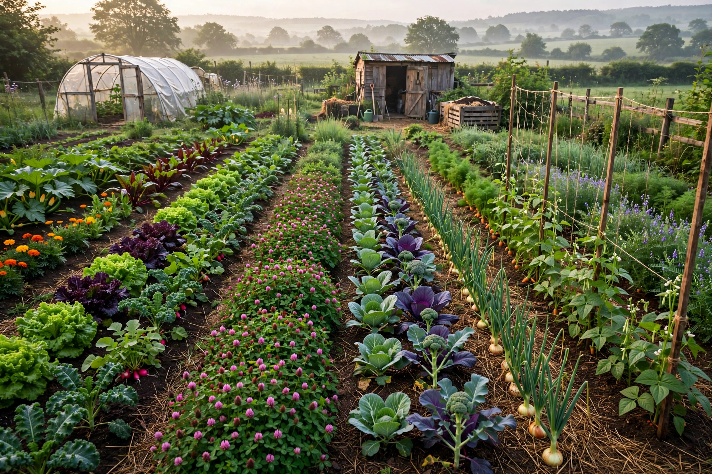

From Wikipedia, the free encyclopedia
| Organic farming | |
| Also known as | Organic agriculture, ecological farming, biological agriculture |
|---|---|
| Key principles | Soil health, ecological balance, biodiversity, no synthetic fertilisers or pesticides, no GMOs |
| Global extent | Over 70 million hectares (FiBL estimates, early 2020s), under 2% of world farmland |
| Regulation | Certified under national schemes: USDA Organic (USA), EU organic regulation, and equivalents |
| Foundational figures | Albert Howard, Rudolf Steiner (biodynamics), Eve Balfour, Rachel Carson (influence) |

Organic farming, also known as organic agriculture or ecological farming, is an agricultural system that emphasises the use of naturally occurring substances and processes while prohibiting or strictly limiting synthetic inputs. Organic farmers rely on crop rotation, compost and animal manure, cover crops, biological pest control, and mechanical cultivation to maintain soil fertility and manage pests, and they avoid most synthetic fertilisers and pesticides, genetically modified organisms, irradiation, growth hormones, and routine antibiotics. Products meeting national standards may be certified and labelled "organic"; the global market for organic food has grown into the hundreds of billions of dollars.
All farming was "organic" by default until the 20th century's synthetic fertilisers and pesticides. The modern movement arose in reaction to industrialising agriculture: Rudolf Steiner's biodynamic agriculture lectures (1924), Sir Albert Howard's work in India and his An Agricultural Testament (1940), and Lady Eve Balfour's The Living Soil (1943) and the Soil Association she co-founded in Britain articulated the philosophy of feeding the soil rather than the plant. Rachel Carson's Silent Spring (1962) galvanised public concern about pesticides; in the 1970s the movement organised internationally with the founding of IFOAM (1972, now IFOAM – Organics International). Governments progressively codified standards — the US Organic Foods Production Act (1990) and USDA National Organic Program (2002), and successive EU regulations from 1991 onward.
Certified organic production requires a transition period (typically two to three years) during which prohibited substances are not applied, buffer zones against drift from neighbouring farms, and annual inspection by accredited certifiers. Soil fertility is managed with rotations including legumes, green manures, and composted animal manures. Pest and disease management emphasises prevention — resistant varieties, habitat for predators, crop diversity — with a short list of permitted, mostly naturally derived pesticides (such as copper compounds, sulfur, and Bacillus thuringiensis) as a last resort. Livestock standards generally require outdoor access, organic feed, and forbid routine antibiotics and growth promoters. Standards differ between jurisdictions in details, a persistent complication for trade.
Meta-analyses generally find organic yields lower than conventional — commonly estimated at roughly 19–25% lower on average, though the gap narrows with good practice and diversification, and can vanish for some crops and conditions. Because lower yields imply more land per unit of output, the net environmental balance is contested: per hectare, organic farms typically support greater biodiversity, build soil organic matter, and use less energy and synthetic input pollution, but per unit of product their greenhouse-gas and land-use footprints may equal or exceed conventional farming. Health claims for consumers — lower pesticide residues are well documented, superior nutrition less conclusively — remain debated. Proponents frame organic agriculture as a systemic alternative oriented to ecology and fairness; critics, including Norman Borlaug, have argued it cannot feed the world's population without vast land conversion.